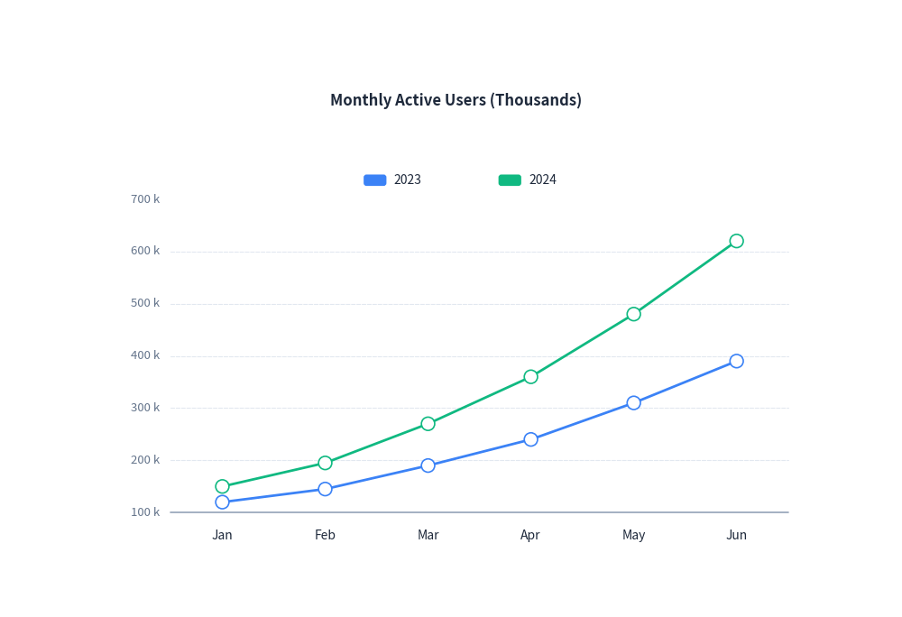
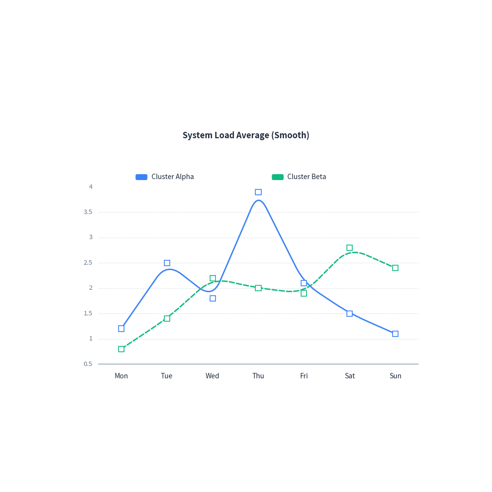
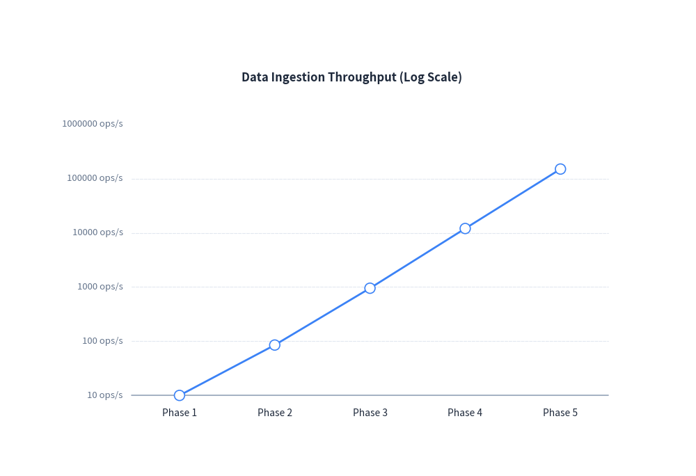

Line Chart Guide
drawlib.charts.LineChart provides modern 2D line charts with support for multi-series comparisons, straight or smooth spline lines, custom point markers, and logarithmic scales.
1. Quick Start: Multi-Series Line Chart
Compare continuous metrics over categories or time intervals:
from drawlib import canvas
from drawlib.charts import LineChart
canvas.initialize()
canvas.config(width=95, height=65)
chart = LineChart(
categories=["Jan", "Feb", "Mar", "Apr", "May", "Jun"],
width=80,
height=52,
title="Monthly Active Users (Thousands)",
show_points=True,
)
chart.add_series("2023", [120, 145, 190, 240, 310, 390])
chart.add_series("2024", [150, 195, 270, 360, 480, 620])
chart.configure_y_axis(unit="k", show_grid=True)
chart.draw(xy=(8.0, 5.0))

2. Smooth Curves & Custom Markers
Enable smooth=True for rounded, fluid curve interpolation, and customize marker shapes (point_shape="square" or "circle"):
from drawlib import canvas
from drawlib.charts import LineChart
canvas.initialize()
canvas.config(width=95, height=65)
chart = LineChart(
categories=["Mon", "Tue", "Wed", "Thu", "Fri", "Sat", "Sun"],
width=80,
height=52,
title="System Load Average (Smooth)",
smooth=True,
show_points=True,
point_shape="square",
)
chart.add_series("Cluster Alpha", [1.2, 2.5, 1.8, 3.9, 2.1, 1.5, 1.1])
chart.add_series("Cluster Beta", [0.8, 1.4, 2.2, 2.0, 1.9, 2.8, 2.4], line_style="dashed")
chart.configure_y_axis(show_grid=True)
chart.draw(xy=(8.0, 5.0))

3. Logarithmic Scale Trend
Combine LineChart with configure_y_axis(scale="log") to track exponential growth or wide dynamic ranges:
from drawlib import canvas
from drawlib.charts import LineChart
canvas.initialize()
canvas.config(width=95, height=65)
chart = LineChart(
categories=["Phase 1", "Phase 2", "Phase 3", "Phase 4", "Phase 5"],
width=80,
height=52,
title="Data Ingestion Throughput (Log Scale)",
show_points=True,
)
chart.add_series("Throughput", [10.0, 85.0, 950.0, 12000.0, 150000.0])
chart.configure_y_axis(scale="log", unit="ops/s")
chart.draw(xy=(8.0, 5.0))

4. API Reference
LineChart
| Parameter | Type | Default | Description |
|---|---|---|---|
categories |
list[str] |
Required | Category labels along horizontal axis. |
width |
float |
80.0 |
Chart bounding width. |
height |
float |
50.0 |
Chart bounding height. |
title |
str |
"" |
Chart title displayed at the top. |
show_points |
bool |
True |
Whether to render markers at data points. |
point_shape |
"circle" | "square" | "none" |
"circle" |
Shape of point markers. |
point_size |
float |
0.7 |
Radius or half-width of point markers. |
smooth |
bool |
False |
Smooth curves vs straight lines. |
legend_position |
"auto" | "top" | "bottom" | "right" | "none" |
"auto" |
Position of legend box. |
show_values |
bool |
False |
Whether to display values above markers. |
Methods
add_series(name: str, values: list[float], color=None, style=None, line_width=2.0, line_style="solid", point_shape=None, point_size=None) -> LineSeriesconfigure_y_axis(...) -> Axisconfigure_x_axis(...) -> Axisdraw(xy: tuple[float, float] = (0.0, 0.0)) -> None
© 2026 drawlib by Yuichi Ito. Released under the Apache 2.0 License.